the daily read
one reading each morning. the mood, what's causing it, and the one thing worth ur attention.
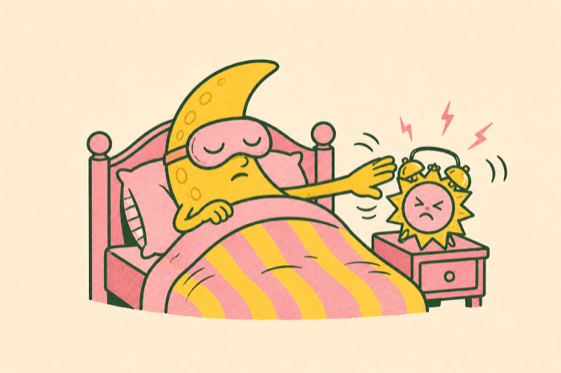
THE DAILY TOTA · FRESH TODAY
that's tota. he files the paper.
every other astrology app hands u a horoscope that could be about anyone. tota starts with ur actual chart, then reads today against it. specific enough to be worth opening.
free to download. the free tier is actually usable.
the desks
every part of the app is its own desk with its own beat, so u always know which one u are reading.
one reading each morning. the mood, what's causing it, and the one thing worth ur attention.

yesterday, today, tomorrow. the moon, the mood, and the memo behind each one.
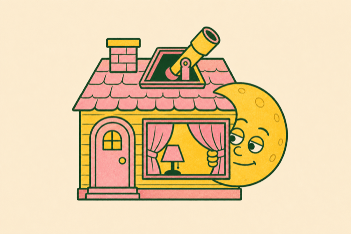
ask the question u'd never google. tota reads ur chart before answering it.
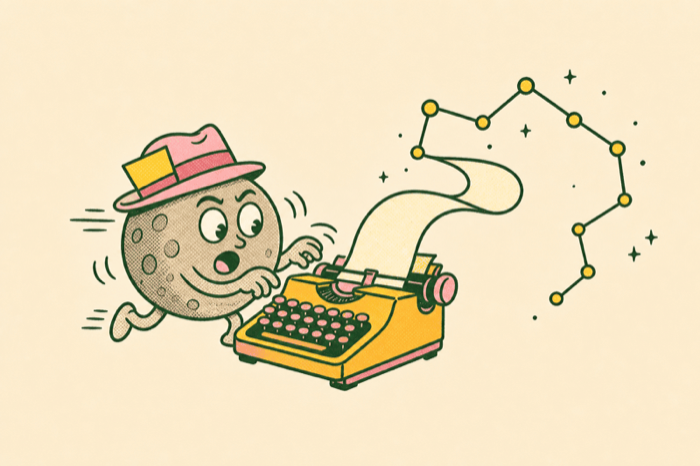
every placement and every house, on the record, ready when u want the receipts.
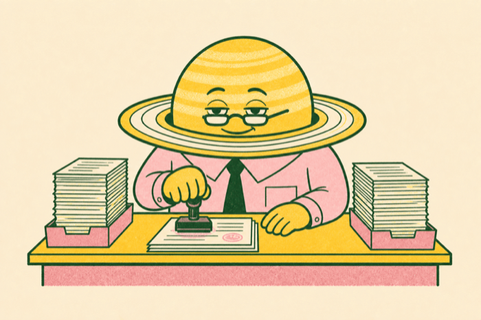
two charts in, all eight checks out, scored /36. reads like a group chat, not a spreadsheet.
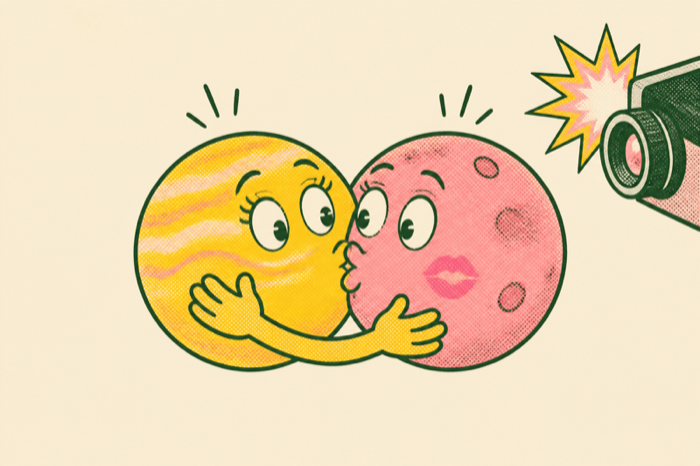
pull up the charts behind names u already know. some of them explain a lot.
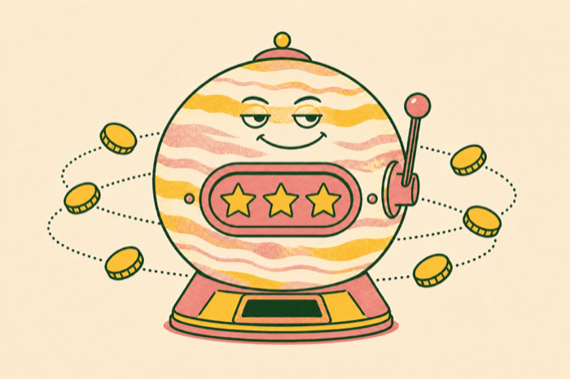
tap any line and tota shows the placement it came from. saturn on ur rising point, moon in ur fourth house, whatever it actually was.
lahiri ayanamsa, the same system an astrologer in india works from. mesha, not aries. ur vedic sun sign is usually one behind the one u grew up with.
tota will tell u this week is annoying and why. it won't tell u ur cursed, and it will never tell u to drink water and trust the process.
inside the app
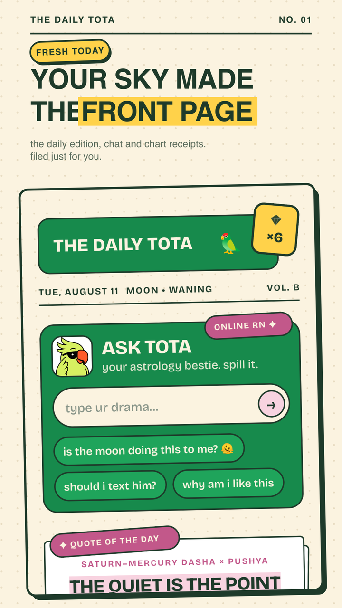
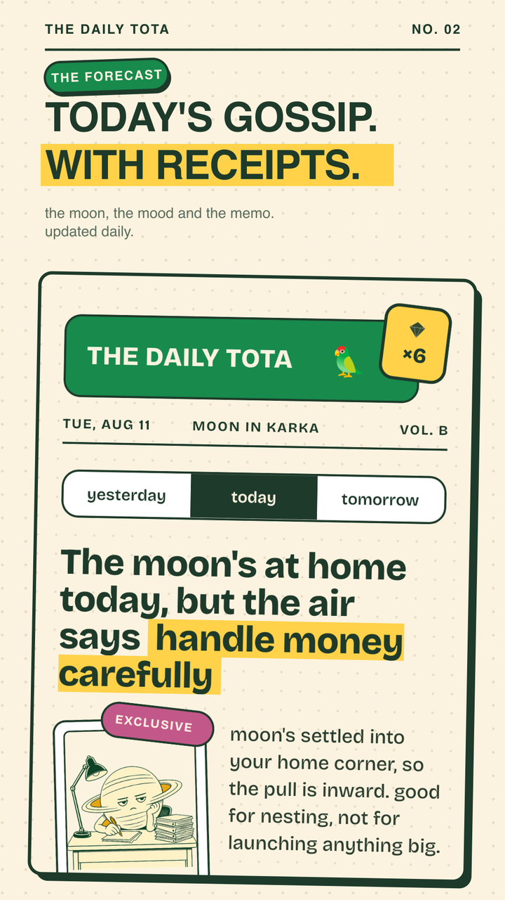
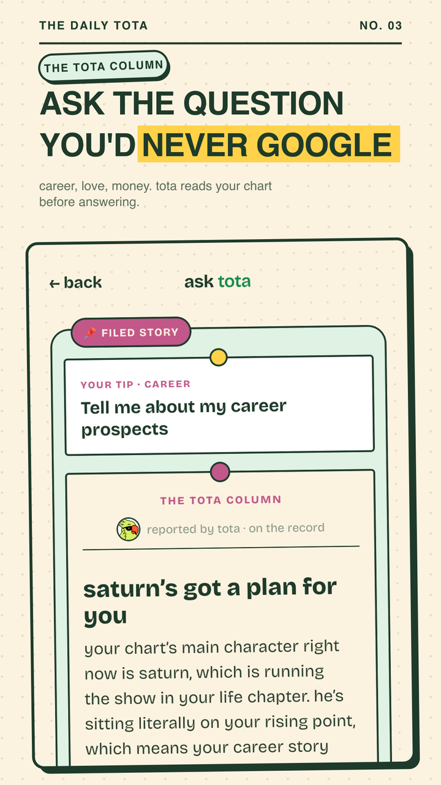
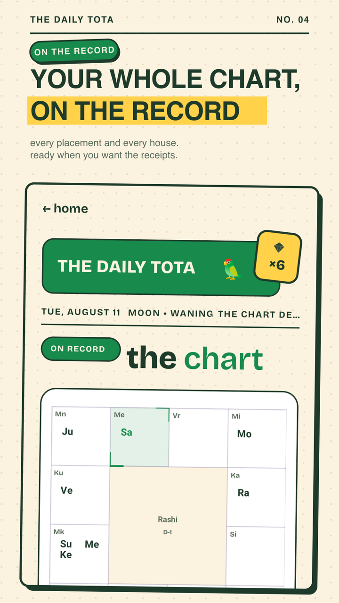
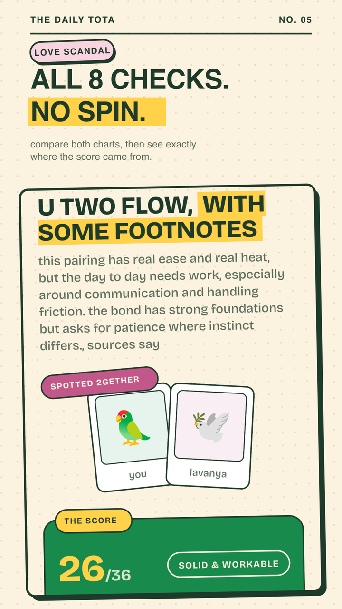
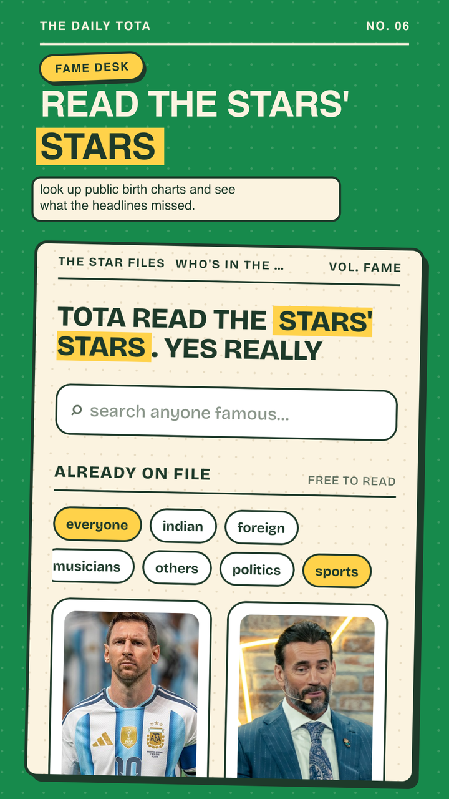
scroll sideways. or just go get it.
press pass
u always know what u get, what resets, and when. no fake countdowns, no mystery premium badge, no dark patterns.
enough to actually live with, not a trailer for the paid one.
for people who open it before they open instagram.
the whole paper, plus the people u keep asking about.
ur birth details are personal and tota treats them that way. nothing is sold, nothing goes to brokers, and there is no cross-app tracking. to write ur readings, ur chart data and questions go to an AI provider outside india, which is on the label before u type anything. delete the account and everything in it from inside the app, instantly. read the policy.
the ios desk
android first, ios next. leave ur email and u get exactly one message, the day it lands on the app store.
the fine print
a vedic astrology app that starts from ur actual birth chart, then reads today against it. one reading a day, crush checks, ur whole chart, and a chat u can ask anything. written like a tabloid, not a textbook.
google play, free to download. the iphone version is still being built, and there is a form up there if u want to know the day it lands.
yes, and the free tier is meant to be lived with: the daily read, ur full chart, and a set number of questions and crush checks on a reset timer u can actually see. plus and pro raise the limits. that is the whole difference.
vedic. tota calculates sidereal positions with the lahiri ayanamsa, which is the standard across india, and prints sanskrit sign names like mesha and vrishabha. ur vedic sun sign usually lands one sign behind the western one u already know.
no. mark it approximate or unknown and u still get a chart. accuracy only decides what is reliable: ur sun barely moves across a whole day, ur moon shifts every two and a quarter days, and ur rising sign changes about every two hours.
it runs ashtakoota, which checks eight factors between two charts and adds them up out of 36. tota shows the per-koota breakdown, not just the total. it is a game though. it tells u nothing true about an actual person.
ur phone number and a code over whatsapp. no password, no email, no continue-with-anything.
a language model writes the prose. the astrology underneath is calculated, not generated: real ephemeris positions, real houses, real dashas. readings can still be wrong or weird, so treat them as entertainment, not advice.
tota is the parrot who runs the paper. tota is also just the hindi word for parrot, and in indian street astrology a trained parrot picks the card that holds ur reading. the sunglasses were his idea.